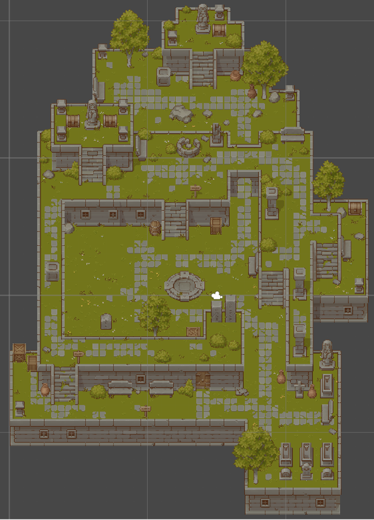
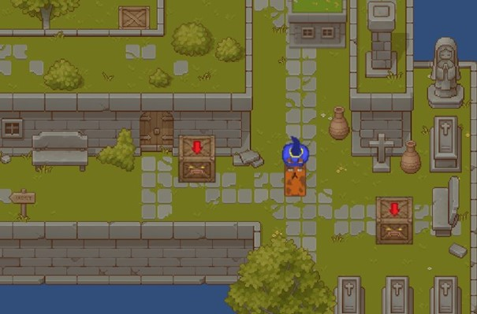
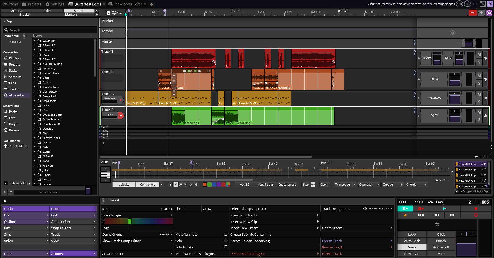
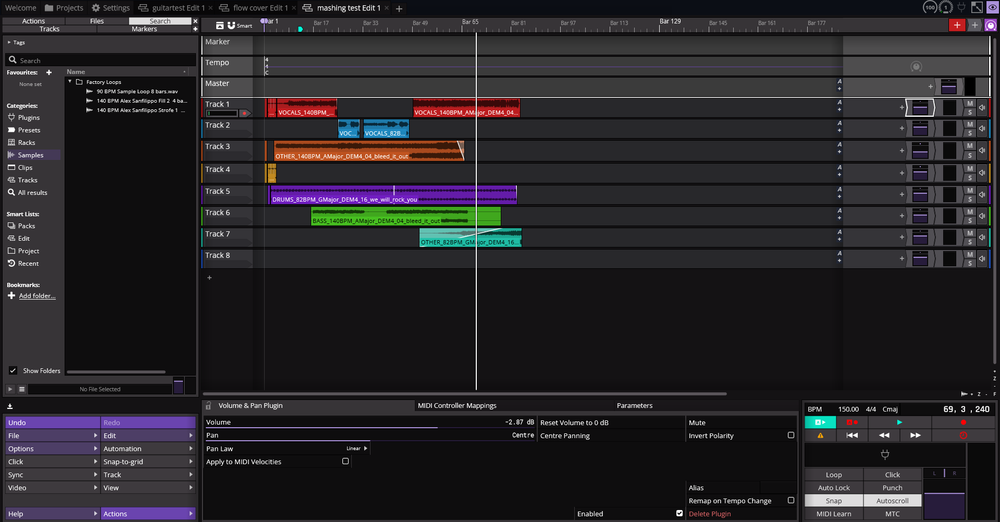

During this informatics project we were free to choose a subject. I, together with two other friends, decided to make a 2D top down game in Unity.
The game that we made was Cubic Cat'astrophe, where the player controlled Cubic Carfield (yes, garfield is not spelled with a C). The player could freely move move across the map, push boxes, shoot at enemies (Grumpy Crates). The player had a set amount of health and could be hit back by the enemies.
The project was very much about trial and error, as we had barely any experience with C# and most of our time was spend figuring out why things where breaking.


This is a game that i made for a informatics project.
In the game two players have a dice roll-off until one of the players win.
At the end of the project i even managed to convert the python files to a .exe file.
During this project for O&O (research and design) I, together with other people in my team, created a database with Python and JSON.
This is a project I did because I wanted to have a fun way to play all the music files that I have stored on my PC.
It automatically scans the music folder and makes a list of all artists, albums and songs by reading the metadata of the music files.
It works with .mp4, .flac and .ogg files. It has functioning play/pause, skip and back buttons and shows information about the currently playing song, including the album art.
These are two tracks that I made using Waveform 13, my keyboard and my electric guitar.
The timing on the tracks are not the best as it is something i am still trying to learn to do better.


Guitar Test Track
This is a track that i made while testing my electric guitar in Waveform 13
We Will Bleed It Out (Bleed It Out x We Will Rock You)
I made this track after realising that the drumbeat from We Will Rock You fitted really well with Bleed It Out, so i decidede to try and make a mashup. The transitions between tracks are not always very smooth, but i am still happy with the outcome.